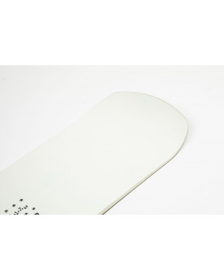

Snieglentės snieglenčių sportas - Skelbiu.lt
2020.10.29 10:45
X Dėl geresnės Skelbiu.lt paslaugų kokybės naudojame slapukus (angl. cookies).
Naršydami toliau, patvirtinate, kad sutinkate su slapukais. Tai bet kada galėsite atšaukti, pakeisdami nustatymus. Skelbiu.lt slapukų politika . Lankomiausias
skelbimų portalas LT RU ( 0 ) Įsiminti skelbimai ( 0 ) Peržiūrėti skelbimai Paieškos ( 0 ) Prisijungti Registruotis Snieglentės, Snieglenčių sportas (101) Gauti naujus skelbimus: Ekrane El. paštu + Įdėti skelbimą Įsiminti skelbimai (0) Skelbimų: 101 Atnaujinti viršuje Naujausi viršuje Atnaujinti viršuje Pigiausi viršuje Brangiausi viršuje
NEPRALEISKITE NAUJŲ SKELBIMŲ
Snieglentės, Snieglenčių sportas
Gaukite naujus skelbimus į ekraną Gaukite naujusskelbimus el. paštu Vilnius, ... prieš 1 d. 2
4vnt Dc snieglentes Naujos!vyriskos,moteriskos
4 vnt nauju Dc snieglenciu. Vyriskos: Nr.1 Vyriska DC MEDIA BLITZ 150CM 2017METU. Snieglente allmountin twin(universali),hibridinis rocker.Tiks snieglentininkui svoriu 50-85kg,batai iki 44.5d. Nauja-nenaudota-120eur Nr.2 Vyriska DC... Būklė: nauja 110 € Vilnius prieš 3 d. 1Snieglentė Nidecker megalight 2019
Nidecker megalight 2019 modelis 164cm. Geras stovis, padarytas pilnas servisas Būklė: naudota 180 € Panevėžys prieš 49 min.Snieglentė "Morrow Snowboards/fury 146cm(6381)
Parduodama Snieglentė "MORROW SNOWBOARDS/FURY 146CM(6381). MŪSŲ LOMBARDĄ-KOMISĄ GALITE RASTI ADRESU: Nemuno g. 70, Panevėžys https://www.skelbiu.lt/mano-skelbimai/ Būklė: naudota 95 € Klaipėda prieš 2 val.Snow board
Snow board, veikia puikiai nieks nesuluze, nekliba. Būklė: naudota 12 € Vilnius, ... prieš 2 val.Superkame naujas, naudotas gerų firmų snieglentes
ISPARDUOTUVES-LOMBARDU TINKLAS VILNIUJE IR KAUNE.VISA PARA.PALUKANOS NUO 2%,TAISOME TELEFONUS,PLANSETES,KOMPIUTERIUS IR KITA-SUPERKAME VISKAS KAS TURI KOMERCINE VERTE,LOMBARDAS-PALUKANOS NUO 2%.PINIGU YRA VISADA,LAUKIAM! GALIM ATVYKTI PAS JUS... Būklė: naudota Ieško Vilnius prieš 3 val.Arbor Relapse
Arbor Relapse 155cm Būklė 9/10 Puiki snieglentė tinkanti slidinėjimui kalnuose, tiek parke. Jokių rimtų įbrėžimų. Reikia nusivaškuoti o tada atsistoji ir važiuoji. Papildomai dovanoju vaikišką snieglentę Būklė: naudota 150 € Vilnius prieš 4 val.Buitis
Būklė: naudota 10 € Kaunas prieš 1 d.Salomon snieglentė 138 cm
Salomon snieglentė ir Salomon apkaustai 138 cm. Jokio servizo daryti nereikia. Būklė: naudota 135 € Kaunas prieš 1 d.Snieglentė 133 cm. su naujais apkaustais
Labai geram stovyje snieglentė 133 cm. Apkaustai didinasi mažinasi nuo S iki M , apkaustai visiškai nauji Būklė: naudota 115 € Kaunas prieš 1 d.Snieglentė 133 cm su naujais apkaustais
Snieglentė 133 cm. Su visiškai naujais apkaustais. Būklė: naudota 115 € Reklama Kaunas prieš 1 d.Lenta 170 cm su dėklu
Stocis superinis dedi ir vaziuoji jokio sercizo nereikia ilgis lentos 170 cm. Būklė: naudota 85 € Anykščių r. prieš 1 d.Salomon villain classicks snowboard
Salomon villain classicks snowboard 153cm Naudota. Būklė: naudota 120 € Kėdainių r. prieš 1 d.Snieglente
Stovis geras su apkaustais 1.30-0.20 Būklė: naudota 20 € Anykščių r. prieš 1 d.Snieglentė,snowboard
Devėtos snieglentės: 1. Scott Alturis USA 160cm.Balta su medžio piešiniu.-70eur 2. Salomon Rude 154cm. Crazy Creek apkaustai- 120eur 3. Hot Stuff Digital 148cm.-80eur 4. Nidecker Axis.145cm.- 60eur 5. Burton Alpine Racing AMP 4.6 lygiu... Būklė: naudota Kėdainių r. prieš 1 d.Snieglente
1.30-0.20 Būklė: naudota 20 € Kaunas prieš 1 d.Snieglentė
Parduodama Fanatic ultra boa snieglentė su apkaustais. Ilgis 163 cm. Būklė: gera Būklė: naudota 60 € Vilnius, ... prieš 1 d.Snieglentė Nitro Carbon su Flow apkaustais
Naudota, bet geros būklės Nitro Carbon snieglentė. Parke nebuvus - jokių nuskėlimų ar atsilupimų. Esu antras savininkas, tikslių gamybos metų nežinau, bet numanau apie 2014-15. Ilgis 162, plotis 25 cm, kietumas vidutinis (4-5). Greito užsegimo... Būklė: naudota 155 € Biržų r. prieš 1 d.Snieglentė G-force su apkaustais 145cm
Parduodu naudotą snieglente G-Force. Galiu pridėti 43 dydžio batus, kuriems reikalingas smulkus remontas. Būklė: naudota 45 € Biržų r. prieš 1 d.Snieglentė Burton Floater 53 su apkaustais 145cm
Parduodu naudotą snieglentę Burton Floater 53 145cm Su apkaustais Galiu pridėti 43 dydžio batus, kuriems reikia smulkaus remonto Būklė: naudota 90 € Kaunas prieš 1 d.Snieglentė
Parduodama naudota snieglentė. Ilgis apie 50cm Būklė: naudota 15 € Vilnius prieš 1 d.Snieglentės Burton 162w+apkaustai ir 155 30eur
Snieglente Burton trick pony 162 wide 2014m+ Apkaustai burton custom XL est 2018m. 139EUR komplektas. Gerai išlaikyta, pirkejui nuvaškuosiu, nugalastysiu, pilnai paruošiu sezonui. Sniegente Burton honcho 155 2013m, perdažyta. Tinka... Būklė: naudota 139 € Vilnius prieš 1 d.Tnt 156 snieglente
Pirkta nauja, naudota porą sezonų ,gilių įbrėžimų nėra, lanksti, smagiai čiuožia. Dar neparuošta kitam sezonui. Būklė: naudota 85 € Vilnius, ... prieš 1 d.Snieglente su apkaustais
147cm ilgis. M/L Union apkaustai. Paruosta artejanciam sezonui. Labai smagi ciuozt. Mazai naudota. Pirkta JAV. https://youtu.be/u5CyvVqkMKk Būklė: naudota 170 € Klaipėda, ... prieš 1 d.Snieglentė su apkaustais
Snieglentė iš Vokietijos, puikiai atliekanti savo darbą. Ilgis 144cm. Būklė: naudota 50 € 1 2 3 4 5 Įsiminti skelbimai Įdėkite skelbimąPopuliarios paieškos:
snieglente
vaikiska
snieglente vilnius
Prisijunk ir rask savo įsimintus skelbimus visur – kompiuteryje, telefone, planšetėje ARBA Jungtis su Facebook Jungtis su Google Skelbiu.lt pagalba: +370 664 55727 Darbo laikas: I-V 08:20 - 17:00 Naudojimo taisyklės / D.U.K. Kontaktai Svetainės struktūra D I G I N E T